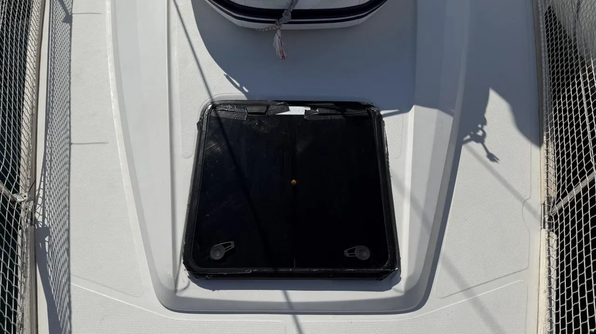

Передний люк в чартерной эксплуатации: как спасти Lewmar и нервы экипажа
Практическое руководство по борьбе с протечками носового люка на Elan 45.1. Пошаговая диагностика уплотнителей, устранение люфтов петель, регулировка пластиковых зажимов и превентивная инженерная защита.
⚓️ В двух словах: Проблема и контекст
Две мои Elan 45.1 Impression 2020 года прошли шесть сезонов активной работы в чартере. Обе лодки — систершипы, и болячки проявляются абсолютно одинаково. Самая дорогая и обидная — течь переднего люка. И дело тут вовсе не в качестве Lewmar, комплектующие у них отличные. Виной всему человеческий фактор.
Типичный сценарий: экипаж вышел в море, раздуло, свежо, а носовой люк оставили открытым для проветривания. На лавировке нижняя шкаторина генуи намертво цепляется за открытую крышку. Закрывают её в спешке, сильными рывками, когда внутрь каюты уже летят встречные брызги. За шесть лет таких издевательств расшатывается всё: геометрия петель, зажимы, прижимной уплотнитель. В дождливую погоду или на косой волне вода начинает капать прямо на спальные места носовой каюты, вызывая недоумение у экипажа. Ниже делюсь опытом, как мы вылечили эту системную болячку без вывода лодок из эксплуатации посреди сезона.

🩺 Диагностика: откуда течет на самом деле
Первое правило — не спешить заказывать новый люк в сборе, это всегда успеется. Часто течет не само акриловое стекло и не треснувшая рамка, а вполне ремонтопригодные элементы. На наших Lewmar после детальной дефектовки трещин в алюминиевом профиле рамы не обнаружилось. Это сразу исключило худший сценарий. Путей для проникновения воды оставалось всего три:
- Уплотнитель по периметру: Резина со временем теряет эластичность, сохнет от соли или неплотно сидит в посадочном пазу.
- Зажимы (ручки-задрайки): Критический узел. На моделях Low Profile тех лет они пластиковые. Эксцентрик со временем стачивается, и прижимной контакт ослабевает.
- Шарниры петель: Микролюфт даже в 1–2 мм на корне петли не дает уплотнителю лечь ровно в носовой части рамы, куда и приходится основной удар встречной штормовой волны.
🛠️ Быстрый ремонт «на коленке» посреди сезона
Когда лодки расписаны по заездам на недели вперед, замена люка целиком — это финансовый срыв графиков. Наш экспресс-метод позволил вернуть герметичность и спокойно доходить до осеннего слота на верфи.
Восстановление прижима зажимов:
Снимите пластиковую ручку-задрайку с акриловой крышки (крепится на двух винтах). На основании пластика почти всегда видна выработка — канавка от трения о металлический «язычок» рамы. Нам нужно компенсировать этот износ. Вырежьте аккуратную подкладку из тонкого (0.5–1 мм) фторопласта или нержавейки по форме основания зажима. Установите её между зажимом и резиновой шайбой крышки. Это сместит эксцентрик ручки глубже внутрь и полностью вернет заводское усилие прижима. Закрываться люк должен плотно, но от руки, без экстремальных усилий колена.
Переклейка уплотнителя:
Часто вода просачивается под саму резиновую ленту. Извлеките старый уплотнитель, тщательно зачистите паз в алюминиевом профиле рамы от соли и старого клея. Перед укладкой нового оригинального уплотнителя (артикул Lewmar ZSP25253 для Low Profile Size 70) аккуратно промажьте паз тонким слоем нейтрального силиконового герметика. Это на 100% исключит капиллярный подсос воды под резину.
Устранение люфта петель:
Приоткройте люк и покачайте крышку вверх-вниз. Если чувствуется люфт в шарнирах — уплотнитель на носу не сожмется как надо. Используйте фирменный ремкомплект петель Lewmar (hinge repair kit). Выбивается фиксирующий штифт, извлекаются разбитые нейлоновые втулки, ставятся новые с добавлением тефлоновой смазки — и геометрия крышки восстановлена.
🧱 Инженерная защита от «дурака»: краш-бар
Лечить следствие проще, когда устранена коренная причина. Чтобы шкаторина генуи при поворотах оверштаг или фордевинд больше никогда не ломала открытую крышку, мы сварили и установили перед люком краш-бар (crash bar) — защитную дугу из полированной нержавеющей трубы AISI 316 диаметром 22 мм. Высота дуги над палубой делается на 20 мм выше максимального угла открытия крышки люка. Монтируется дуга строго на сквозные болты через палубу с усиленными подкладочными шайбами изнутри. Теперь косой удар стакселя принимает на себя стальная дуга, а люк остается в полной безопасности.
📦 Стратегия на два систершипа: склад запчастей
Имея две одинаковые лодки, мы сформировали единый аварийный комплект на базе, который ликвидирует простои за пару часов: пара пластиковых ручек-задраек, один ремкомплект шарниров петель и бухта оригинального уплотнителя. При первой же возможности на обеих яхтах пластиковые зажимы были заменены на опциональные металлические из нержавеющей стали от Lewmar. Да, они дороже, но стальной эксцентрик не изнашивается и держит прижим вечно.
💎 Вывод
Течь носового люка в условиях интенсивного чартера — это не повод для паники или дорогостоящей замены узла целиком. Болячка является системной и полностью лечится точечным рефитом ручек, втулок петель и правильной посадкой резины на силикон. А установка защитного краш-бара навсегда закрывает этот вопрос, прощая экипажу любые ошибки в штормовом море.